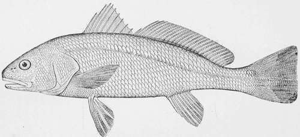

The Channel Bass Or Red-Fish-Scioena Ocellata, (Gunther.)
Description
This section is from the book "American Game Fishes", by W. A. Perry. Also available from Amazon: American Game Fishes: Their Habits, Habitat, and Peculiarities; How, When, and Where to Angle for Them.
The Channel Bass Or Red-Fish-Scioena Ocellata, (Gunther.)
Much has been written on the Striped Bass, more of the Black Bass, and their allies, the White, Green, and Speckled Basses, but few writers have treated of the above species, which is a fish of great merit in many ways. It is known to school-men as Perca ocellata, Linn; Corvina ocellata, Cuv. and Val; C. ocellata, Holbrook; Scioena ocellata, Goode and Jordan.
With names in the vernacular, it is still more liberally supplied. Channel Bass, Red-fish, Red-drum, Red-horse, Spot, Sea-Bass, Branded-drum, and Bass, pure and simple these according to locality, from Barnegat Inlet to Texas. As Professor Goode remarks, "this species is very much in need of a characteristic name, as all the above names belong to other species," and he suggests "The Southern Red-fish" as most suitable. An objection to this is that the fish is not always red, the young being not at all so, and the adult fish as often of golden hue as red, and to change the popular name of fish or bird is perhaps impossible.
Our Bass is a stout, thick-set fish, in color reddish-brown Dn the back, red or golden on the sides, according as the fish is found in fresh or salt water-white beneath, with one or more black spots on the base of the tail. Hence the specific name, ocellata, signifying "eye-shaded spots." It is well supplied with large fins, and covered with big scales, which in large specimens are removed with a hoe. Head and mouth large, with fine teeth in the jaws, and paved teeth in the throat. The lips are tough, holding a hook securely, when lodged. In size from one pound to fifty, averaging, says Prof. Goode, ten pounds; but in the experience of the present writer, somewhat less-perhaps seven. The smaller ones run in companies, and go by the name of "School Bass." The large ones go in pairs, or singly, and are called "Channel Bass." It is not a shy fish, like the Striped Bass, requiring delicate tackle and long casts for its capture, but is a bold biter, always hungry, and ready to play his part-and he plays it well, fighting hard and long on the hook in open water-disdaining such tricks as running into holes, and taking the line round roots and snags, or sulking at the bottom like the lordly Salmon, or biting off the line like the Shark or the Pike. By his deeds, if not by his words, the Red Bass tells the angler that it is to be a fair fight and trial of skill and strength between the combatants; and I have seen a large Channel Bass break a heavy cod-line, in the hands of a too impatient fisherman who tried to force the fighting. Be it remembered that the native fisherman on the southern coast uses the hand-line.
From its size, abundance, game and edible qualities, the Channel Bass may be considered the most valuable sporting fish of the southern coast. In its habits it somewhat resembles the Striped Bass of northern waters, and many of those, who have taken both species on a rod, consider the southern fish as equal to the other in game quality; and the pursuit of our fish has this advantage: that the angler may rely, three days out of four, in making a catch; whereas the rule is reversed in the case of the Striped Bass. If you can kill a good-sized Striped Bass, one day in four, you do better than the average-as far as my experience goes. How many days I have sat on the rocks at Newport or Narragansett, with a crowd of patient anglers, waiting for the strike of a Bass-which came not.
Red Fish-Scioena ocellata.
This species roams widely. In summer it is taken as far north as Barnegat, and of very large size. At all seasons it is found on the Atlantic and gulf coasts of Florida, and on the coasts of Georgia, the Carolinas, and Virginia. In winter it is confined to Florida waters, running well up into fresh water, but disappears when a norther brings cold weather. Seldom have I seen a Bass at these times; but as soon as a change of wind brings warm weather we find the Bass on hand, ready for business. Good fishing-grounds are at the mouth of the St. John's river, and this fish has been taken as far up as Magnolia, some fifty miles from the sea. I have also taken them in the fresh water of Spruce Creek, while trolling for Black Bass. Bass are taken on the beach near St. Augustine ; at the Halifax River Inlet is also a good fishing-ground. New Smyrna, on the Hillsboro' River, and the Indian River Inlet, where the writer, in 1870, found the fish too abundant and eager to be caught-but perhaps this objection has been removed by the large number of anglers who have frequented that region of late years.
In summer the Bass is found along the beach in immense numbers. As the fishermen say, "the surf is red with them," and great sport may be had with rod or hand-line, by casting into the surf, as the fish seem to fight harder in open water than in the rivers. The water being quite warm, say seventy degrees, wading is agreeable, and to capture a ten-pound fish while indulging in a warm bath is a novel experience to most anglers. Sharks are found sometimes in the surf, but do not come into the sloughs, or depressions of the beach, where the Bass come to feed.
Bands of roving hogs frequent the beach, and were ready to steal my fish if exposed; and once I found a couple of marsh ponies devouring my Bass; in this region man, beast and bird all live on the fruit of the sea, and there is enough for all-those destructive engines, the pound-net and the mile-long seine, not having as yet been introduced. Twenty-five or thirty Red Bass have been taken by one rod, in the Halifax, in a day, weighing some two hundred to two hundred and fifty pounds. The largest one ever taken by the writer weighed thirty-seven pounds, and the struggle lasted about forty minutes. It was taken on a rod, from a boat, and the fish towed us at least one hundred yards before it was gaffed. Its mate, weighing twenty-five pounds, was soon after taken by my boatman, with a hand-line. My next in size weighed thirty pounds, and while playing it, my companion hooked its mate, weighing twenty-eight pounds, at the other end of the boat. Both were saved in about thirty minutes time. The same tackle that is used for the Striped Bass is suitable for his southern cousin, except that a sinker of one or two ounce weight is used in casting from the reel, and it is unnecessary here to use gut or delicate tackle, which is apt to be cut by the oyster shells that cover the bottom of the best feeding-grounds of the Bass. Use a two-pieced bamboo rod-what is called a chum-rod-eight feet long; one hundred yards of Cuttyhunk line, and fifteen thread, with multiplying reel, with drag. In the matter of hooks, anglers have their different fancies, and I have never been able to find exactly the hook for Red Bass. It should be sharp and penetrating, and at the same time heavy in the wire-the hollow-point Limerick, seven-o, does pretty well, but I have seen a hook known as Abby & Imbries Whiting hook three-o, which I prefer-I use them ringed, as more easy to tie to the snood, for which I use a cotton line rather heavier than the reel line, as a fine line is apt to be frayed off by the teeth of the Bass. We lose many hooks from the oyster shells, and some anglers use a fine wire next the hook. Perhaps the best pattern of hook is the Sproat, but they do not come ringed or flatted. Add to this equipment a stout long-handled gaff, and a pair of knit thumb-stalls and you are ready for the fray. The Bass come in from the sea with the tide, and are found at different stages of it, either near the Inlet, on the sand banks, in the creeks, or along the edge of the marsh ; and a stranger needs a guide to find the fish. For bait, cut-mullet, or small ones used whole; the half of a crab is a good bait also. We usually fish on the bottom, but Bass will take at mid-water, or on the surface, and often near the boat. This fish spawns in August or September, in the inlets and bays, as I am informed by Florida fishermen, and deposits many eggs, making it a prolific species-perhaps the most abundant on the southern coast. Specimens of ten or twelve pounds are the best for the table; the large ones are coarser, and the young fish have less flavor. They may be boiled, baked, or fried, and make a firm, well flavored and succulent dish.
The following description is from Jordan and Gilbert's Synopsis of the Fishes of North America:
Scioena ocellata-Gthr. Channel Bass-Red Bass: Grayish silvery, iridescent; scales with dark spots forming faint irregular undulating stripes; upper part of base of caudal with an oval black spot as large as the eye, bordered by white or orange; this spot is often duplicated. Body rather elongate, not much elevated, compressed behind, an almost even curve from snout to base of dorsal; preopercle distinctly serrate; eye large; one and a half in. snout; five and a half in. head; gill-rakers short and thick; mouth large; maxillary nearly reaching the posterior margin of the orbit; caudal truncate; second anal spine rather strong, two thirds as long as first ray; pectoral fins ver}' short, not reaching half way to lower; pharyngeals narrow, with conical teeth. Head 3^ ; depth 2>¼ D.X.-I. 25; A. II. 8; Lat. I. 50. Cape Cod to Mexico, common southward; known at sight by the peculiar caudal spot.
Continue to: